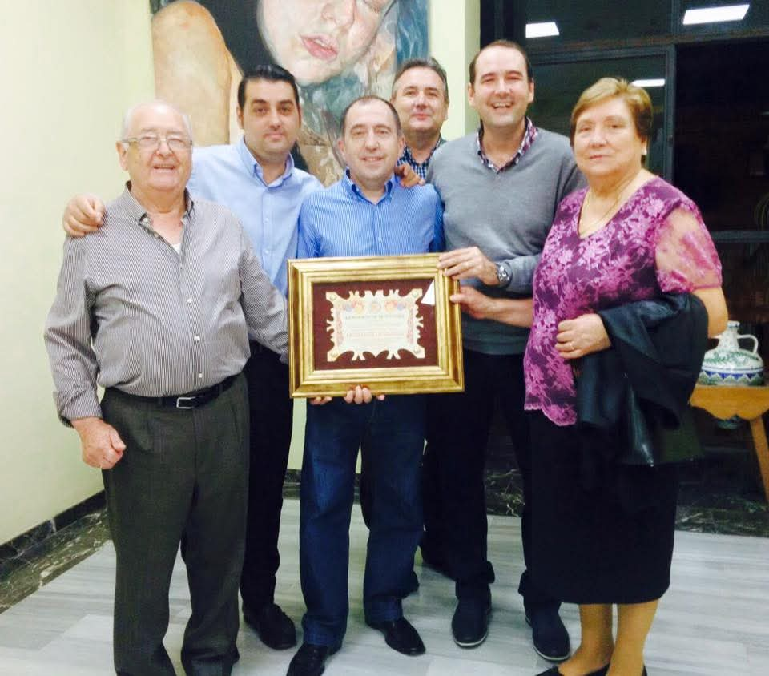

Palmeras
☰
Así comenzaría nuestra historia…
Un 4 de agosto de 1983, una familia decidió dar un paso valiente y abrir las puertas de un pequeño restaurante que nacería del esfuerzo, la ilusión y muchas horas de trabajo.
Al frente estaba Antonio Inarejos, quien desde el primer día ocupó su lugar detrás de la barra, atendiendo a cada cliente con cercanía, conversación y una sonrisa que pronto se volvió inconfundible.
A su lado, su mujer, Elia Verdejo—peluquera de profesión y sin experiencia alguna ,aceptó el mayor de los retos: ponerse al frente de la cocina.
Cada plato llevaba algo más que ingredientes: llevaba historia, cariño y respeto por la tradición.
Desde el primer día, el lugar se convirtió en un punto de encuentro para vecinos, amigos y viajeros que buscaban sabores auténticos y un trato cercano.
Con el paso del tiempo, sus hijos se unieron al negocio familiar, creciendo entre mesas, aromas y conversaciones. Aprendieron el valor del trabajo, del compromiso y del trato cercano con los clientes, asimilando desde pequeños la esencia del restaurante y el sacrificio que conllevaba mantenerlo vivo.
Los años trajeron cambios, aprendizajes y nuevos retos, pero también la satisfacción de ver cómo aquel proyecto familiar se consolidaba.
Tras la jubilación de Antonio y Elia, fueron sus hijos quienes tomaron el relevo, asumiendo con orgullo y responsabilidad la gestión del restaurante, manteniendo vivas las tradiciones y aportando nuevas ideas sin perder la esencia con la que todo comenzó.
Hoy, décadas después de aquel 4 de agosto de 1983, el restaurante sigue siendo un símbolo de constancia, unión y amor por la buena cocina. Cada servicio es un homenaje a quienes lo iniciaron y a todos los que, plato a plato, han formado parte de su historia.
Porque más que un restaurante, es un legado familiar que sigue vivo en cada sabor.
